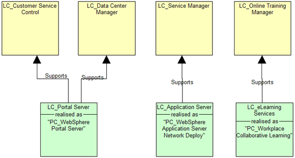
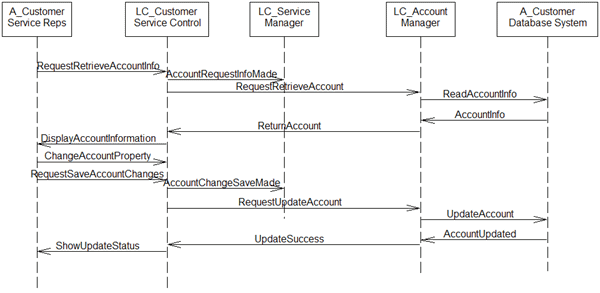

In a pre-sale (Team Solution Design) context, development of the following high level elements of the
component model are likely to be helpful.
-
Identify high level solution components
The Architecture Overview Diagram and System Context will be helpful in identifying or suggesting
potential high level components.
-
Complete the component description for each high level component
In this work product, a component is viewed broadly and is literally any piece of software that has an
interface and makes sense to portray as a component. Components may be made up of other components. They may be
large or small. As general guidance, at a high level, components depict the major subsystems and interfaces of the
overall system. Later they can be decomposed or refactored as necessary. Components are often built or acquired as
a cohesive unit, separate in some way from other components. Components are described with the following
characteristics.
-
-
Responsibilities: This is a general text description of the responsibilities (based on
functional requirements) of this component from the point of view of a user of the component. This
description will later be refined into specific operations or methods which constitute the interface
for this component.
-
Required service levels: Describe the service level for this component with regard to the
following categories:
Users and Presentation: Identify the number and types of users of this component
including a brief user profile. Users may also be other components.
Performance and Capacity: Identify performance requirement if known. Identify rates
and sizes of messages. At the pre-sales level, this information may be quite approximate for users that are
other components.
Availability: Define availability requirements as required by the users of the
component per the following example:
Reasonableness and Risk: Assessment of risk associated with the design and or use of
this component in the overall solution. If high, include mitigation strategy.
Design Rationale: Identify key design decisions made during design of the
component.
Implementation Approach: Define how this component will be implemented (language,
tools etc.). If this component will be implemented by selection of a product, reference work product that
identifies the selection and mapping of this component to a particular product.
-
Develop Component Relationship Diagram
This diagram (as shown in the brief example below) illustrates all of the components and their static
relationships.
-
-
Represent each component with a component symbol, including name.
-
Identify relationship (such as uses) between components where appropriate

Note: The diagram above was developed using the SA4TeamSD configuration of IBM's Rational System
Architect and uses symbols that do not strictly conform to UML2 notation. The component
symbols also include information on component data and methods as a result of using the tool. As
created in System Architect, this diagram represents a logical view.
-
Develop Component Interaction Diagram
This diagram is based on the UML Sequence Diagram which is a kind of UML Interaction Diagram. It emphasizes the
ordering of messages between components to execute some particular scenario. In a pre-sale environment, the
component interaction diagram may be required on a limited basis. It can be helpful in illustrating complex
interactions. It also is helpful in understanding walkthroughs of the architecture. The following example
illustrates the use of a component interaction diagram.

The example diagram above was built using System Architect's Logical Sequence View.
In less complex situations, these diagrams may be developed using basic tools or presentation software. In more
complex situations, it may be helpful to use System Architect. The above examples were created using
System Architect. In such complex situations, it may also be helpful to take advantage more elaborate modeling
techniques which afford both logical and physical views. System Architect supports the following Component Model views:
-
Logical Relationship View
-
Logical Sequence View
-
Logical Collaboration View (an alternate but equivalent sequence view)
-
Logical Structure View
-
Physical Relationship View
-
Physical Structure View
|